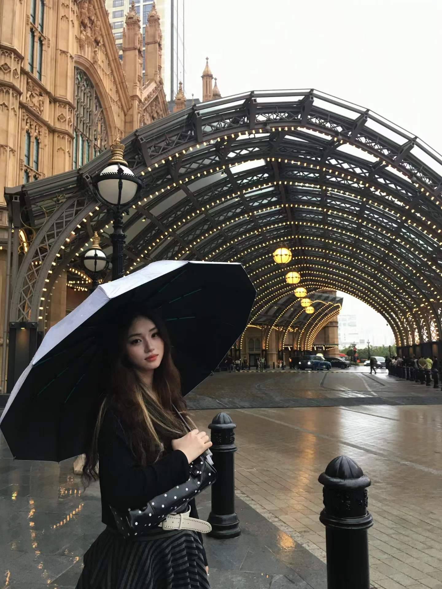

移动应用开发者 / 创意工具创造者 / 无障碍技术探索者
专注于研究将传感器技术、AI 能力与用户体验深度融合，打造让人生活更好的应用。 从概念设计到原型落地，用代码连接创意与现实。
我是一名对移动应用感兴趣的学生，致力于用技术解决真实世界的问题——从健康行为追踪到无障碍辅助， 从创意工具到 AI 赋能应用。
我相信好的产品诞生于对用户需求的深刻理解和对技术细节的极致追求。我的工作横跨 Apple 生态系统开发（HealthKit / CoreMotion / Flutter）、 AI 应用落地（LLM 微调 / 意图识别 / 情绪检测）以及 微信小程序等多个平台。
目前正在推进多个项目，包括基于生态球植物的情绪追踪应用、无感健康行为确认系统、 面向听障人士的 AI 电话助手等。同时也在开展创意儿童文创产品的设计
基于生态球季节植物的情绪追踪应用。通过植物生长状态映射用户情绪变化，将心理健康管理与自然生态美学结合，打造沉浸式的自我关怀体验。
Apple 生态下通过 iPhone + Apple Watch 传感器自动识别并确认健康行为（运动、睡眠、服药），无需手动打卡，让健康追踪真正"无感"。
面向听障人士的 AI 电话助手，实时将对方语音转为文字、生成意图摘要并进行情绪检测，帮助听障用户独立完成电话沟通。
基于 LoRA 的大语言模型微调实践，聚焦中文场景下的指令跟随与领域适配，探索低资源环境下的高效模型定制方案。
面向儿童的萌宠海洋主题文创产品系列，将迷你海洋生物（如小丑鱼、海星、水母等）与萌系设计语言结合，打造兼具趣味性与科普性的儿童文创周边，激发儿童对海洋生态的好奇与热爱。
完成核心功能开发与测试，正在进行最终审核与发布流程。
基于 Apple Watch + iPhone 传感器，实现运动自动识别、睡眠同步、服药确认与异常预警，计划 6 周完成 MVP。
面向听障人士的 AI 电话助手完成核心功能原型，实现实时语音转文字、意图摘要与情绪检测。
完成基于生态球季节植物的情绪追踪应用概念设计，核心机制为植物生长状态映射用户情绪变化。
结合青年爱国教育与国家发展战略，进行深度政策研究分析。
无论是项目合作、技术交流，还是只是想打个招呼，都欢迎与我联系。 我对健康科技、无障碍技术和 AI 应用领域的新想法特别感兴趣。